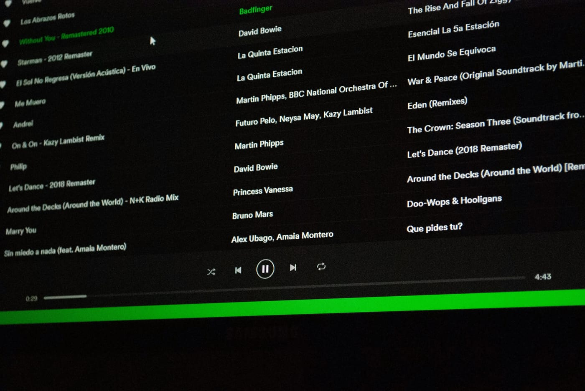

Twój kawałek ma 10 000 odtworzeń na Spotify. Brzmi jak sukces, prawda? A teraz pytanie, które zadaje sobie każdy początkujący producent i artysta: ile na tym faktycznie zarobiłeś? Odpowiedź może Cię zaskoczyć - w obie strony.
W tym artykule rozkładamy temat tantiem ze streamingu na czynniki pierwsze: jakie są realne stawki za odtworzenie, ile trzeba mieć streamów, żeby zarobić konkretną kwotę, i - co najważniejsze - dlaczego sama liczba odtworzeń to dziś tylko część obrazka.
Ile realnie płaci Spotify za jeden stream
Zacznijmy od kwestii, która często zaskakuje: Spotify nie płaci stałej kwoty za każde odtworzenie. Platforma działa na modelu pro-rata - dzieli łączne przychody (z abonamentów i reklam) proporcjonalnie do udziału danego utworu we wszystkich odtworzeniach w danym kraju i miesiącu.
W praktyce oznacza to, że stawka za jeden stream jest zmienna i zależy od wielu czynników jednocześnie. Oto te najważniejsze:
- Kraj słuchacza - rynki z wyższymi cenami abonamentów (np. Skandynawia, Europa Zachodnia) generują wyższy przychód na odtworzenie. Stream z Polski przyniesie artystom mniej niż ten sam stream ze Szwecji czy USA.
- Typ konta słuchacza - odtworzenia z kont premium generują więcej niż te z kont z reklamami (free tier).
- Umowa z dystrybutorem - platforma nie wypłaca pieniędzy bezpośrednio artystom. Między Spotify a muzykiem stoi dystrybutor (np. DistroKid, TuneCore, CD Baby), który pobiera swoją prowizję lub stałą opłatę roczną.
- Podział praw - tantiemy za nagranie (master) trafiają do właściciela nagrania, a tantiemy kompozytorskie (za utwór i tekst) obsługują organizacje takie jak ZAiKS w Polsce - to dwa odrębne strumienie pieniędzy.
Szacunkowy rząd wielkości, z którym operuje branża, to ok. 0,003 - 0,005 USD za jedno odtworzenie na koniec 2025 roku - ale to uśrednienie z bardzo różnych rynków i typów kont. W przeliczeniu na złote i po odliczeniu prowizji dystrybutora realna kwota docierająca do artysty jest często bliżej dolnego krańca lub nawet poniżej. Traktuj te liczby jako rzędy wielkości, nie jako gwarantowaną stawkę - każda umowa dystrybutorska i każdy rynek wyglądają nieco inaczej.
Model pro-rata w skrócie: zamiast płacić stałą cenę za każdy stream, Spotify dzieli pulę przychodów z danego rynku między wszystkich artystów - proporcjonalnie do tego, ile procent wszystkich odtworzeń przypada na ich muzykę. Im większy "udział w rynku odtworzeń", tym więcej z puli.
Przykład: ile trzeba odtworzeń, żeby na tym zarobić
Przełóżmy to na konkretne liczby. Przyjmując stawkę po stronie ostrożnej - ok. 0,003 USD za stream po odliczeniu prowizji dystrybutora - wychodzą takie przybliżenia:
| Liczba odtworzeń | Szacunkowy przychód (USD) | Odpowiednik w PLN (orientacyjnie) |
|---|---|---|
| 1 000 | ok. 3 USD | ok. 12 zł |
| 10 000 | ok. 30 USD | ok. 120 zł |
| 100 000 | ok. 300 USD | ok. 1 200 zł |
| 1 000 000 | ok. 3 000 USD | ok. 12 000 zł |
Dla porównania - jeden obiad w restauracji to ok. 35-50 zł, co odpowiada ok. 3 000-4 000 odtworzeń. Miesięczny abonament na Spotify (ok. 25 zł) to ok. 2 000 streamów. A żeby zarobić kwotę zbliżoną do minimalnego wynagrodzenia w Polsce, potrzeba by było ok. 2-3 milionów odtworzeń miesięcznie - i to przy założeniu korzystnych warunków dystrybutorskich.
Te liczby nie są po to, żeby zniechęcić - ale żeby dać realistyczny obraz. Dla niezależnego artysty bez dużej bazy słuchaczy sam Spotify rzadko jest głównym źródłem dochodu - i to jest normalne, nie powód do zniechęcenia. Streaming to przede wszystkim narzędzie zasięgu i budowania kariery, nie wypłata.
Dlaczego liczba odtworzeń to nie cała prawda
Nawet jeśli masz realistyczne oczekiwania co do stawek, jest jeszcze jedna warstwa złożoności, której wielu artystów nie bierze pod uwagę: tantiemy ze streamingu to nie jeden, ale kilka osobnych strumieni pieniędzy.
Tantiemy za nagranie a tantiemy kompozytorskie
Kiedy Twój utwór jest odtwarzany na Spotify, generuje dwa rodzaje tantiem. Tantiemy za nagranie (master royalties) trafiają do właściciela nagrania - jeśli nagrałeś i wydałeś utwór samodzielnie, to Ty. Tantiemy kompozytorskie (publishing royalties) trafiają do autora muzyki i tekstu - a te w Polsce obsługuje ZAiKS. Oba strumienie są niezależne i wymagają osobnych kroków, żeby je odebrać.
Prowizja dystrybutora
Dystrybutor, który umieszcza Twoją muzykę na Spotify, pobiera swoją część. Model różni się w zależności od dystrybutora: jedni pobierają procent od zarobków (10-15%), inni płatną roczną subskrypcję niezależnie od zarobków. Wybór dystrybutora ma realny wpływ na to, co trafia do Twojej kieszeni.
Inne realne źródła dochodu dla niezależnego artysty
Streaming to tylko jeden z wielu sposobów na zarabianie na muzyce. Warto budować kilka źródeł dochodu jednocześnie:
- Sprzedaż beatów i sample packów - bezpośrednia sprzedaż, bez pośredników platformy.
- Usługi mix i mastering - jeśli potrafisz dobrze miksować i masterować, inni artyści zapłacą za te usługi.
- Koncerty i występy - nadal jeden z głównych źródeł dochodu dla wielu artystów.
- Sync - licencjonowanie muzyki do reklam, filmów, seriali i gier. Jednorazowe opłaty mogą być wielokrotnie wyższe niż lata streamingowych tantiem.
- Merchandise i bezpośrednie wsparcie fanów - platformy jak Bandcamp czy Patreon pozwalają na bezpośrednią relację z fanami.
Co realnie zwiększa Twoje szanse na sukces w streamingu
Skoro same odtworzenia nie gwarantują dochodu, co faktycznie pomaga? Kilka rzeczy ma realny wpływ na długoterminowe wyniki na platformach streamingowych.
Jakość produkcji jako "bilet wstępu"
Playlisty redakcyjne Spotify (jak Discover Weekly, Release Radar czy playlist tematyczne) są dobierane przez algorytmy i redaktorów, którzy porównują utwory ze sobą na tych samych systemach odsłuchowych. Utwór ze słabym miksem lub masteringiem po prostu przegrywa z zawodowo brzmiącą konkurencją - nawet jeśli sama kompozycja i wykonanie są świetne.
To dlatego jakość miksu i masteringu to nie luksusy, ale kluczowe elementy strategii streamingowej. Jeśli dopiero uczysz się miksowania, warto zacząć od podstaw equalizacji - co to jest EQ i jak go używać w miksie - a następnie poznać kontrolę dynamiki: kompresja w muzyce. A jeśli chcesz sprawdzić, czy Twój miks brzmi dobrze nie tylko w słuchawkach, ale też na głośniku telefonu, zajrzyj do poradnika dlaczego mix brzmi inaczej na głośnikach.
Regularność i konsekwencja
Algorytmy Spotify preferują artystów, którzy wydają regularnie i utrzymują aktywność. Wydawanie jednego singla co 6-8 tygodni buduje historię artysty szybciej niż jeden album raz na dwa lata.
Budowanie społeczności poza Spotify
Spotify to dystrybucja, nie społeczność. Media społecznościowe, newsletter, strona artysty - to miejsca, gdzie budujesz relację z fanami, którzy będą streamować Twoją muzykę z wyboru, a nie tylko dlatego, że algorytm ją podsuną. Fani, którzy Cię szukają, są więcej warci algorytmicznie niż pasywni słuchacze.

Najczęstsze pytania (FAQ)
Czy małym artystom opłaca się wgrywać muzykę na Spotify?
Tak, ale nie należy traktować tego jako głównego źródła dochodu na start. Obecność na Spotify to przede wszystkim budowanie zasięgu, statystyk i wiarygodności - np. przy rozmowach o koncertach czy współpracach. Realne tantiemy rosną dopiero przy dużej skali odtworzeń.
Ile odtworzeń potrzeba, żeby zarobić zauważalną kwotę?
Ze względu na model pro-rata i niskie stawki jednostkowe, zauważalne kwoty (rzędu kilkuset do kilku tysięcy złotych miesięcznie) wymagają zwykle dziesiątek lub setek tysięcy odtworzeń miesięcznie - co w praktyce oznacza utwór, który "złapał" playlisty lub viralowy zasięg.
Czy inne platformy (Apple Music, Tidal) płacą więcej niż Spotify?
Stawki różnią się między platformami i zmieniają się w czasie, ale żadna z dużych platform streamingowych nie płaci na tyle, by sam streaming był głównym źródłem dochodu dla artystów poza ścisłym topem. Dlatego warto dystrybuować muzykę na wszystkie platformy jednocześnie, traktując to jako sumę małych źródeł.
Jak zwiększyć szansę na trafienie do playlist Spotify?
Kluczowe są: regularność wydawania nowości, dobrze opisany profil artysty, składanie utworów do Spotify for Artists z wyprzedzeniem przed premierą oraz - co często niedoceniane - jakość miksu i masteringu, bo redaktorzy playlist porównują utwory ze sobą na tych samych systemach odsłuchowych.